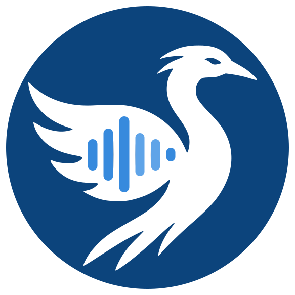

Vous parlez.Le texte s'écrit.You speak.The text writes itself.Usted habla.El texto se escribe.Sie sprechen.Der Text schreibt sich.
NiderVoice s'installe sur votre ordinateur et écrit ce que vous dictez directement dans vos documents, votre messagerie et vos logiciels. Toute la reconnaissance vocale se fait sur place.
NiderVoice installs on your computer and writes what you dictate straight into your documents, your e-mail and your software. All speech recognition happens on the spot.
NiderVoice se instala en su ordenador y escribe lo que usted dicta directamente en sus documentos, su correo electrónico y sus programas. Todo el reconocimiento de voz se hace en el propio ordenador.
NiderVoice wird auf Ihrem Computer installiert und schreibt, was Sie diktieren, direkt in Ihre Dokumente, Ihre E-Mails und Ihre Programme. Die gesamte Spracherkennung erfolgt vor Ort.
Exemple illustratif — texte fictifIllustrative example — fictitious textEjemplo ilustrativo — texto ficticioIllustratives Beispiel — fiktiver Text
Vous dictez.NiderVoice écrit là où vous travaillez.You dictate.NiderVoice writes where you work.Usted dicta.NiderVoice escribe donde usted trabaja.Sie diktieren.NiderVoice schreibt, wo Sie arbeiten.
Un raccourci ou un clic pour commencer : le texte s'affiche au fil de la parole, dans le logiciel ouvert devant vous. Vous relisez et vous validez, comme toujours.
A shortcut or a click to start: the text appears as you speak, in the software open in front of you. You read it over and confirm it, as always.
Un atajo o un clic para empezar: el texto aparece a medida que habla, en el programa que tiene abierto. Usted lo relee y lo valida, como siempre.
Ein Tastenkürzel oder ein Klick genügt: Der Text erscheint, während Sie sprechen, in dem Programm, das vor Ihnen geöffnet ist. Sie lesen ihn und bestätigen ihn, wie immer.
Écrit dans vos logiciels
Writes into your software
Escribe en sus programas
Schreibt in Ihre Programme
Le texte arrive là où se trouve le curseur, comme si vous le tapiez au clavier. Aucun logiciel à changer.
The text arrives where the cursor is, as if you were typing it. No software to change.
El texto aparece donde está el cursor, como si lo escribiera con el teclado. No hay que cambiar de programa.
Der Text erscheint an der Cursorposition, als würden Sie ihn tippen. Kein Programm muss ersetzt werden.
Vous gardez la main
You stay in control
Usted mantiene el control
Sie behalten die Kontrolle
« Point », « virgule », « à la ligne », « nouveau paragraphe » : la ponctuation et la mise en page suivent ce que vous dictez.
"Full stop", "comma", "new line", "new paragraph": punctuation and layout follow what you dictate.
«Punto», «coma», «punto y aparte», «nuevo párrafo»: la puntuación y el formato siguen lo que usted dicta.
„Punkt“, „Komma“, „neue Zeile“, „neuer Absatz“: Zeichensetzung und Layout folgen Ihrem Diktat.
Un champ, même quand vous regardez ailleurs
One field, even when you look elsewhere
Un campo, aunque mire a otra parte
Ein Feld, auch wenn Sie woanders hinschauen
Fixez la dictée sur une zone de texte : chaque phrase s'y ajoute à la suite, pendant que vous consultez un autre document.
Anchor dictation on a text field: each sentence is added there, one after the other, while you look at another document.
Fije el dictado en un campo de texto: cada frase se añade allí, una tras otra, mientras consulta otro documento.
Verankern Sie das Diktat in einem Textfeld: Jeder Satz wird dort angefügt, während Sie ein anderes Dokument ansehen.
Vos dictéesne quittent jamais votre ordinateur.Your dictationnever leaves your computer.Sus dictadosnunca salen de su ordenador.Ihre Diktateverlassen nie Ihren Computer.
NiderVoice effectue toute la reconnaissance vocale sur votre ordinateur : avec Vox Caladrii FR en français, avec Whisper dans les autres langues. Aucun enregistrement ni aucun texte n'est transmis à un serveur ; une fois installé, le logiciel fonctionne sans connexion à Internet.
NiderVoice performs all speech recognition on your computer: with Vox Caladrii FR in French, with Whisper in other languages. No recording and no text is sent to a server; once installed, the software works without an Internet connection.
NiderVoice realiza todo el reconocimiento de voz en su ordenador: con Vox Caladrii FR en francés y con Whisper en los demás idiomas. Ninguna grabación ni ningún texto se transmite a un servidor; una vez instalado, el programa funciona sin conexión a Internet.
NiderVoice führt die gesamte Spracherkennung auf Ihrem Computer aus: mit Vox Caladrii FR auf Französisch, mit Whisper in den anderen Sprachen. Weder Aufnahmen noch Texte werden an einen Server übertragen; einmal installiert, funktioniert die Software ohne Internetverbindung.
Tout reste sur place
Everything stays on site
Todo se queda en su ordenador
Alles bleibt vor Ort
La voix est transformée en texte sur votre ordinateur. Aucun enregistrement ni aucun texte n'est transmis.
The voice is turned into text on your computer. No recording and no text is transmitted.
La voz se transforma en texto en su ordenador. No se transmite ninguna grabación ni ningún texto.
Die Stimme wird auf Ihrem Computer in Text umgewandelt. Weder Aufnahmen noch Texte werden übertragen.
La voix part ailleurs
The voice goes elsewhere
La voz se va a otra parte
Die Stimme geht woandershin
La voix est envoyée vers des serveurs distants, parfois hors de l'Union européenne — y compris avec certains services fondés sur Whisper. Pour des informations confidentielles, ce transfert relève du RGPD et engage la responsabilité de la personne qui dicte.
The voice is sent to remote servers, sometimes outside the European Union — including with some Whisper-based services. For confidential information, this transfer falls under the GDPR and engages the responsibility of the person dictating.
La voz se envía a servidores remotos, a veces fuera de la Unión Europea, incluso con algunos servicios basados en Whisper. Para información confidencial, esta transferencia está sujeta al RGPD y compromete la responsabilidad de quien dicta.
Die Stimme wird an entfernte Server gesendet, teils außerhalb der Europäischen Union – auch bei manchen Diensten auf Whisper-Basis. Bei vertraulichen Informationen unterliegt diese Übermittlung der DSGVO, und die diktierende Person trägt die Verantwortung.
Avant d'utiliser un outil de dictée, vérifiez où la voix est transformée en texte.
Before using a dictation tool, check where the voice is turned into text.
Antes de utilizar una herramienta de dictado, compruebe dónde se transforma la voz en texto.
Prüfen Sie vor der Nutzung eines Diktierwerkzeugs, wo die Stimme in Text umgewandelt wird.
Les modèlesde reconnaissance vocale.The speechrecognition models.Los modelosde reconocimiento de voz.Die Modelleder Spracherkennung.
Le modèle est la partie qui transforme la voix en texte. NiderVoice l'exécute sur votre ordinateur, sans carte graphique obligatoire.
The model is the part that turns the voice into text. NiderVoice runs it on your computer; a graphics card is not required.
El modelo es la parte que transforma la voz en texto. NiderVoice lo ejecuta en su ordenador, sin necesidad de tarjeta gráfica.
Das Modell ist der Teil, der die Stimme in Text umwandelt. NiderVoice führt es auf Ihrem Computer aus; eine Grafikkarte ist nicht erforderlich.

Français
French
Francés
Französisch
Vox Caladrii FR, entraîné pour la terminologie radiologique française. Livré avec NiderVoice, prêt à l'emploi.
Vox Caladrii FR, trained for French radiology terminology. Supplied with NiderVoice, ready to use.
Vox Caladrii FR, entrenado para la terminología radiológica francesa. Incluido con NiderVoice, listo para usar.
Vox Caladrii FR, trainiert für die französische radiologische Terminologie. Wird mit NiderVoice geliefert und ist sofort einsatzbereit.
Allemand et anglais
German and English
Alemán e inglés
Deutsch und Englisch
Les modèles Vox Caladrii DE et EN sont en cours de développement. En attendant, NiderVoice prend en charge Whisper (OpenAI), un modèle multilingue généraliste, téléchargeable une seule fois depuis le logiciel. Il n'est pas entraîné pour la terminologie radiologique et peut être plus lent.
The Vox Caladrii DE and EN models are under development. Meanwhile, NiderVoice supports Whisper (OpenAI), a general-purpose multilingual model, downloaded once from within the software. It is not trained for radiology terminology and may be slower.
Los modelos Vox Caladrii DE y EN están en desarrollo. Mientras tanto, NiderVoice admite Whisper (OpenAI), un modelo multilingüe generalista que se descarga una sola vez desde el programa. No está entrenado para la terminología radiológica y puede ser más lento.
Die Modelle Vox Caladrii DE und EN befinden sich in Entwicklung. Bis dahin unterstützt NiderVoice Whisper (OpenAI), ein allgemeines mehrsprachiges Modell, das einmalig aus der Software heruntergeladen wird. Es ist nicht für die radiologische Terminologie trainiert und kann langsamer sein.
Autres langues
Other languages
Otros idiomas
Weitere Sprachen
Près de cent autres langues sont prises en charge avec Whisper. La qualité de reconnaissance varie selon la langue.
Nearly a hundred other languages are supported with Whisper. Recognition quality varies by language.
Casi cien idiomas más son compatibles con Whisper. La calidad del reconocimiento varía según el idioma.
Fast hundert weitere Sprachen werden mit Whisper unterstützt. Die Erkennungsqualität hängt von der Sprache ab.
Dictez en toute confiance.Sur votre ordinateur, et nulle part ailleurs.Dictate with confidence.On your computer, and nowhere else.Dicte con total confianza.En su ordenador, y en ningún otro sitio.Diktieren Sie mit Vertrauen.Auf Ihrem Computer, und nirgendwo sonst.
Pour être informé de la sortie ou poser une question :
To be told when it is released or to ask a question:
Para recibir aviso del lanzamiento o hacer una pregunta:
Um über die Veröffentlichung informiert zu werden oder eine Frage zu stellen:
contact@nidervoice.com